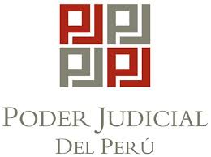
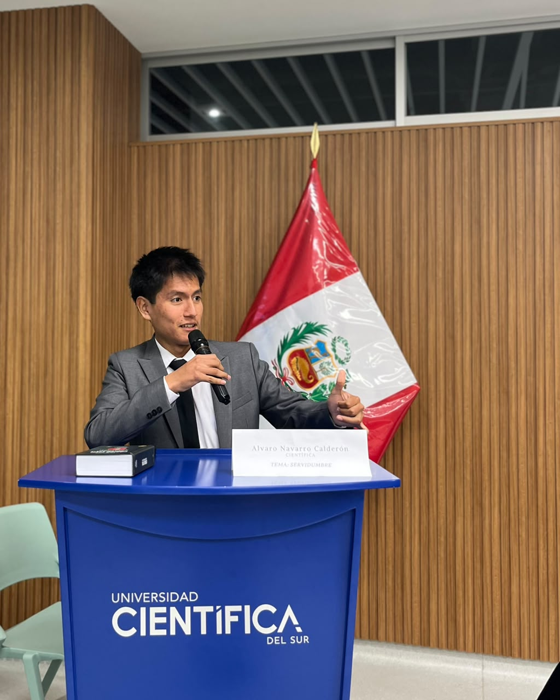

Aquí tienes todo el código de tu archivo index.html completamente editado y listo para copiar.

Ya reemplacé la etiqueta <form> con tu enlace de Formspree ([https://formspree.io/f/xwvjrrag](https://formspree.io/f/xwvjrrag)), agregué el método POST y añadí de forma exacta los atributos name obligatorios (name="nombre", name="email", y name="consulta") en cada campo de texto para que los datos te lleguen completamente estructurados a tu correo.

📄 Código de index.html Actualizado
HTML
<!DOCTYPE html>
<html lang="es">
<head>
    <meta charset="UTF-8">
    <meta name="viewport" content="width=device-width, initial-scale=1.0">
    <title>ANC | Alvaro Navarro Calderón</title>
    <link rel="stylesheet" href="LegalTechEC2.css">
</head>
<body>

    <!-- BARRA DE NAVEGACIÓN -->
    <header class="navbar">
        <div class="nav-container">
            <a href="#" class="logo">ANC</a>
            <nav>
                <a href="#perfil">Perfil</a>
                <a href="#trayectoria">Trayectoria</a>
                <a href="#formacion">Formación</a>
                <a href="#contacto" class="btn-contacto-nav">Contacto</a>
            </nav>
        </div>
    </header>

    <!-- PERFIL -->
    <section id="perfil" class="hero-section">
        <div class="hero-container">
            <div class="hero-text">
                <span class="badge">Décimo Superior — 7mo Ciclo</span>
                <h1>Alvaro Gianpieer Navarro Calderón</h1>
                <p class="subtitle">Estudiante de Derecho en la Universidad Científica del Sur & Practicante Preprofesional</p>
                <p class="descripcion">
                    Perfil enfocado en el análisis riguroso del Derecho Penal Económico y litigios penales. Adicionalmente, me desempeño de forma independiente en la gestión de procedimientos administrativos y litigios civiles enfocados en procesos únicos de ejecución.
                </p>
                <div class="cta-group">
                    <a href="#contacto" class="btn-primary">Contactar Conmigo</a>
                    <!-- Enlace directo a tu carpeta de constancias en Google Drive -->
                    <a href="https://drive.google.com/file/d/1VQk4JqE1rL09vYPZ-ylcaC-LXbYjup17/view?usp=drive_link" target="_blank" class="btn-secondary">Ver Constancias Académicas <span>↗</span></a>
                </div>
            </div>
            <div class="hero-image-box">
                
            </div>
        </div>
    </section>

    <!-- SECCIÓN TRAYECTORIA PROFESIONAL -->
    <section id="trayectoria" class="seccion-blanca">
        <div class="container">
            <h2 class="titulo-seccion">Trayectoria Profesional</h2>
            <div class="timeline">
                
                <!-- Ítem 1: Estudio Oré Guardia con Enlace Real -->
                <div class="timeline-item">
                    <div class="timeline-dot"></div>
                    <div class="time-meta">
                        <div class="institucion-header">
                            
                            <h3><a href="https://clac.cientifica.edu.pe/estudiante-de-la-facultad-de-derecho-y-economia-de-la-universidad-cientifica-del-sur-se-incorpora-al-estudio-de-derecho-penal-mas-prestigioso-del-pais/" target="_blank" class="link-institucion">Estudio Oré Guardia ↗</a></h3>
                        </div>
                        <span class="fecha">Septiembre 2025 — Actualidad</span>
                    </div>
                    <p class="institucion-sub">Practicante Preprofesional en Derecho Penal Económico</p>
                    <p class="time-content">Asistencia legal, asesoramiento, desarrollo académico y redacción de escritos especializados en litigios penales y derecho penal económico.</p>
                </div>

                <!-- Ítem 2: Lex Sphere con Enlace de Instagram Real -->
                <div class="timeline-item">
                    <div class="timeline-dot"></div>
                    <div class="time-meta">
                        <div class="institucion-header">
                            
                            <h3><a href="https://www.instagram.com/p/DKa2vE9M7ut/?utm_source=ig_web_copy_link&igsh=MzRlODBiNWFlZA==" target="_blank" class="link-institucion">Asociación Lex Sphere ↗</a></h3>
                        </div>
                        <span class="fecha">Abril 2025 — Diciembre 2025</span>
                    </div>
                    <p class="institucion-sub">Director</p>
                    <p class="time-content">Dirección y gestión de actividades académicas e institucionales orientadas a la difusión y debate del entorno jurídico.</p>
                </div>

                <!-- Ítem 3: Poder Judicial sin enlace (estático) -->
                <div class="timeline-item">
                    <div class="timeline-dot"></div>
                    <div class="time-meta">
                        <div class="institucion-header">
                            
                            <h3>Poder Judicial del Perú (Sede Chorrillos)</h3>
                        </div>
                        <span class="fecha">Enero 2024 — Marzo 2024</span>
                    </div>
                    <p class="institucion-sub">Voluntario en Materia Penal</p>
                    <p class="time-content">Organización de expedientes en materia penal, realización de notificaciones y atención de escritos presentados con manejo amplio de las plataformas CEJ y SINOE.</p>
                </div>

            </div>
        </div>
    </section>

    <!-- SECCIÓN FORMACIÓN ACADÉMICA -->
    <section id="formacion" class="seccion-gris">
        <div class="container">
            <h2 class="titulo-seccion">Formación Académica</h2>

            <div class="oratoria-destacado">
                <div class="oratoria-img-box">
                    
                </div>
                <div class="oratoria-text">
                    <h3>Participación en Eventos Académicos</h3>
                    <p>
                        Ponente y organizador activo en espacios de debate jurídico, destacando la intervención en <strong>El I Conversatorio Interuniversitario "Derechos Reales" (Lex Sphere)</strong>, así como en el dictado de sesiones académicas y <strong>repasos de Derecho Penal</strong>.
                    </p>
                </div>
            </div>

            <div class="grid-cards">
                <div class="card">
                    <div class="card-header-logos">
                        
                        <div class="card-icon">🎓</div>
                    </div>
                    <h3>Pregrado</h3>
                    <p class="institucion-card">Universidad Científica del Sur</p>
                    <p>Facultad de Derecho. Posicionado en el Décimo Superior de la carrera debido al rendimiento académico sostenido.</p>
                </div>

                <div class="card">
                    <div class="card-header-logos">
                        
                        <div class="card-icon">📚</div>
                    </div>
                    <h3>Asistente de Cátedra</h3>
                    <p class="institucion-card">Derecho Penal - Parte General</p>
                    <p>Asistencia en la preparación, desarrollo de actividades en aula y evaluación junto al Dr. Walter Joshua Palomino Ramírez y la Dra. Cecilia Madrid Valerio (Periodos 2024-1 y 2024-2).</p>
                </div>

                <div class="card">
                    <div class="card-header-logos">
                        
                        <div class="card-icon">🏛️</div>
                    </div>
                    <h3>Asistente de Cátedra</h3>
                    <p class="institucion-card">Bases Romanísticas del Derecho</p>
                    <p>
                        Asistencia en actividades educativas bajo la tutela del profesor Hans Enrique Cuadros Sánchez (Exdirector de la carrera de Derecho). 
                        Participación activa en el litigio constitucional mediante la presentación de la demanda de amparo contra el traslado del Archivo General de la Nación (AGN). 
                        <a href="https://clac.cientifica.edu.pe/grupo-de-historia-del-derecho-de-la-universidad-cientifica-del-sur-presenta-amparo-contra-el-traslado-del-archivo-general-de-la-nacion/" target="_blank" class="link-litigio">Ver Nota del Litigio ↗</a>
                    </p>
                </div>
            </div>
        </div>
    </section>

    <!-- SECCIÓN CONTACTO -->
    <section id="contacto" class="seccion-contacto">
        <div class="container-contacto">
            <div class="contacto-info">
                <h2>Contacto Profesional</h2>
                <p>Para consultas en materia penal económica, litigios civiles o coordinación académica, puede comunicarse directamente a través de los siguientes canales oficiales:</p>
                <ul class="datos-lista">
                    <li>📍 Lima, Perú</li>
                    <li>📞 +51 928 375 330</li>
                    <li>✉️ navarrocalderonalvaro2810@gmail.com</li>
                    <li>💼 gnavarro@oreguardia.com.pe</li>
                </ul>
            </div>
            <div class="contacto-form-box">
                <!-- FORMULARIO ENLAZADO EFECTIVAMENTE A FORMSPREE -->
                <form action="https://formspree.io/f/xwvjrrag" method="POST">
                    <div class="form-group">
                        <label for="nombre">Nombre Completo o Razón Social</label>
                        <input type="text" id="nombre" name="nombre" placeholder="Ej. Juan Pérez" required>
                    </div>
                    <div class="form-group">
                        <label for="correo">Dirección de Correo Electrónico</label>
                        <input type="email" id="correo" name="email" placeholder="Ej. correo@empresa.com" required>
                    </div>
                    <div class="form-group">
                        <label for="consulta">Detalle de la Consulta Jurídica</label>
                        <textarea id="consulta" name="consulta" rows="4" placeholder="Escriba aquí los hechos de forma clara y fáctica..." required></textarea>
                    </div>
                    <button type="submit" class="btn-submit">Enviar Consulta</button>
                </form>
            </div>
        </div>
    </section>

    <!-- PIE DE PÁGINA -->
    <footer class="footer-main">
        <p>© 2026 Alvaro Gianpieer Navarro Calderón. Todos los derechos reservados. Portafolio Académico Profesional.</p>
    </footer>

</body>
</html>